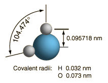

Water
|
Besides being essential to life, water is a remarkable substance with many surprising properties. It is the only inorganic liquid that occurs naturally on the Earth, and the only chemical compound that occurs naturally in all three physical states.
|
|
| Water has the highest specific heat of any common substance, 1 calorie/gm °C = 4.186 J/gm °C. This provides stability of temperature for land masses surrounded by water, provides stability for the temperature of the human body, makes it an effective cooling agent, and many other benefits. The high heat of vaporization of water makes it an effective coolant for the human body via evaporation of perspiration, extending the range of temperatures in which humans can exist. |
At right is a scale model of a water molecule based on the experimental bond length and angle in the gas phase from spectroscopic data. The sizes of the spheres representing the atoms are scaled from their covalent radii in the periodic table. While the numbers for the angle and bond length represent the high precision of gas-phase spectroscopy of isolated molecules, it is not to be presumed that water molecules are rigidly locked into that configuration. They are in ceaseless rotation and vibration in addition to the high linear speeds associated with thermal energy at ordinary temperatures. |  |
In general, molecular vibrational motion takes place on a shorter time scale than rotation, going through many cycles of vibration during a rotation period so that the bond lengths obtained from molecular rotation spectra are effective average bond lengths. The parameters of t he isolated water molecule above are altered significantly in liquid water and even more in hexagonal ice crystals. Water molecules have large dipole moments and the resulting hydrogen bonding in the liquid state alters the bond angle to something like 105.5 to 106° with a bond length around 0.097 nm. In hexagonal ice crystals, the bond angle approaches the tetrahedral angle, 109.47 °. In addition to all the molecular motions, in liquid water there is a continuous exchange of hydrogens between water molecules - about one exchange per millisecond at a neutral pH of 7.0 and more rapidly when the pH departs from neutrality.
Water provides the standard for density at 1 gram/cm3.
While water may seem to be an ordinary liquid, its properties are in many ways unusual. The changes in the properties of water near its freezing point are illustrated below with sketches adapted from Debenedetti and Stanley. The vertical scales are exaggerated for emphasis - the actual magnitudes of the changes are quite small. It is the contrast with the properties of other liquids which makes them remarkable.
| Phases of water | Specific heat | Surface tension |
| Dipole moment | Dipolar bonding | Available on Earth |
Water references:
Franks, F., Water: A Matrix of Life, 2nd Ed., Royal Society of Chemistry,Cambridge, UK (2000).
Ball, P., Life's Matrix: A Biography of Water, Farrar, Straus, and Giroux, New York (2000).
Water concepts
Chemistry concepts
| HyperPhysics*****Chemistry | R Nave |